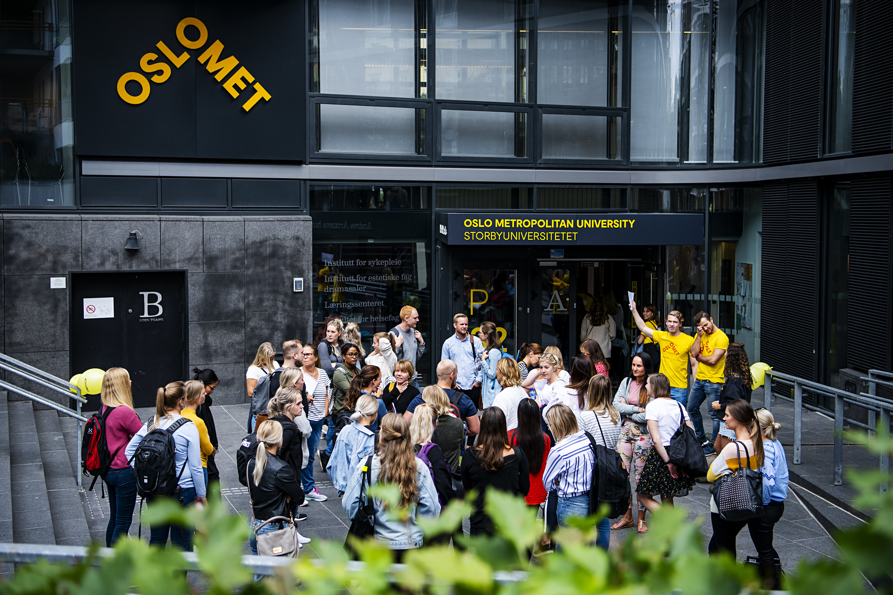

Overgangen fra elev til student
Å gå fra elev til student har vært en stor utfordring, både faglig, sosialt og økonomisk. Til tider kan det også være ganske forvirrende da ingen egentlig forteller eller veileder deg. Du må finne ut det selv, som egentlig oppsummerer hovedpoenget vårt.
Det er store krav som blir satt til oss som studenter og det viktigste er at man har ansvar for egen læring, i motsetning til videregående hadde vi fått tett oppfølging gjennom hele veien. Som student, innebærer det mye selvstudie og man er sin egen sjef. Vårt ansvar gjelder for arbeidsinnsatsen, sørge for at man følger med i emnene og holde seg oppdatert om ulike informasjon på læringsportalen.
Når det kommer til høyere utdanning så er det også utfordrende å forholde seg til større grupper i ulike fag og ha en relativt liten tilknytning til foreleseren. Informasjonsflyten er også veldig annerledes fra videregående. For det første så er det ikke lenger én kontaktlærer som har ansvaret for deg. Undervisning personellet er først og fremst foreleserne og man møter utrolig mange studenter i løpet av en dag. Derfor vil de i liten grad kjenne til detaljene rundt akkurat din timeplan og studium. Selve undervisningen foregår i tillegg ofte på engelsk, som gjør at det er vanskelig å forstå og henge med.

Dette kan igjen gå utover selve motivasjonen til å studere videre, og når man først ikke forstår noe av teorien er det enda enklere å miste motivasjon til å lese seg opp og få forståelse av faget. Når man først er demotivert, vil man også oppleve tanker om at studiet kanskje ikke er det rette studiet og mange vil også følge seg alene i løpet av studiet. Men dette er normale reaksjoner og tanker for alle.
Det er mye mindre undervisning enn hva man er vant til enn tidligere. Det legges opp til svært lite undervisning sammenlignet med videregående. Men det betyr ikke nødvendigvis at arbeidsmengden er mindre. I mange fag må man ofte sitte flere timer med et emne for å kunne forstå. Og bruker som oftest en del tid på å lese gjennom de store pensumbøkene, ta notater, gå gjennom og utvide notater fra forelesninger og regne oppgaver. Teorien er tyngre og generelt er det utfordrende som student på studiet.

Høyere utdanning koster ofte penger og for studenter innebærer det merutgifter, spesielt hvis man har flytta hjemmefra og bor i kollektiv eller hybel. I tillegg er det studielån og man sitter igjen med stor gjeld hvis man ønsker å droppe ut, ikke bestått emner eller manglede studiepoeng. Mange studenter har utfordringer med å leve på kun stipend, dermed ønsker mange å ha en deltidsjobb ved siden av for å ha litt lommepenger. Men dette kan igjen gå utover studiet da man fort kan gå i fellen med å prioritere jobb istedenfor skole.
Ingenting kommer av seg selv, og studietiden fungerer som en slags introduksjon til det ansvarsområdene som voksenlivets selvstendighet følger med, både faglig, sosialt og økonomisk og ikke minst at man får drømme yrket sitt på slutten som er den store gevinsten av å ta en høyere utdanning.